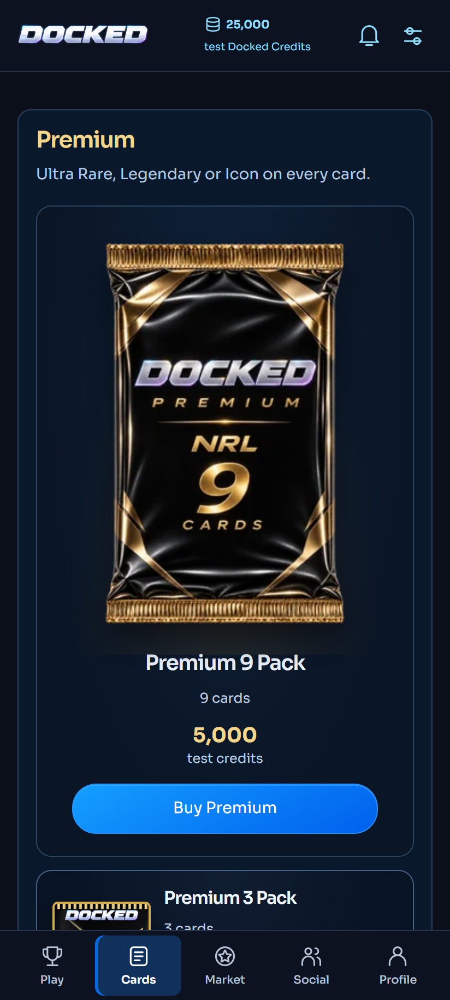
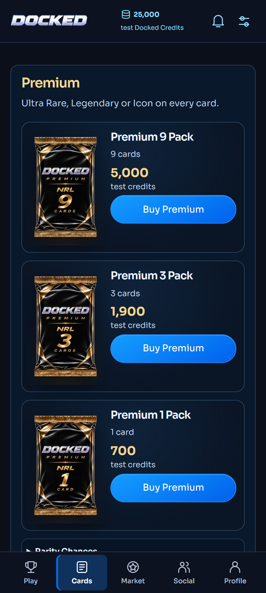
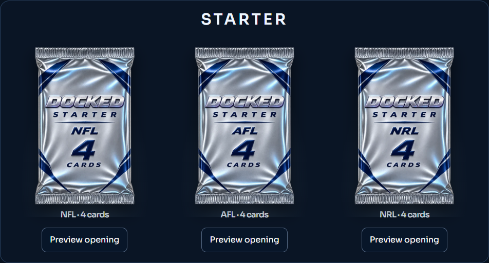
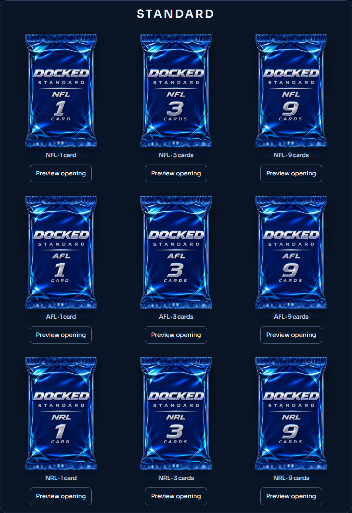
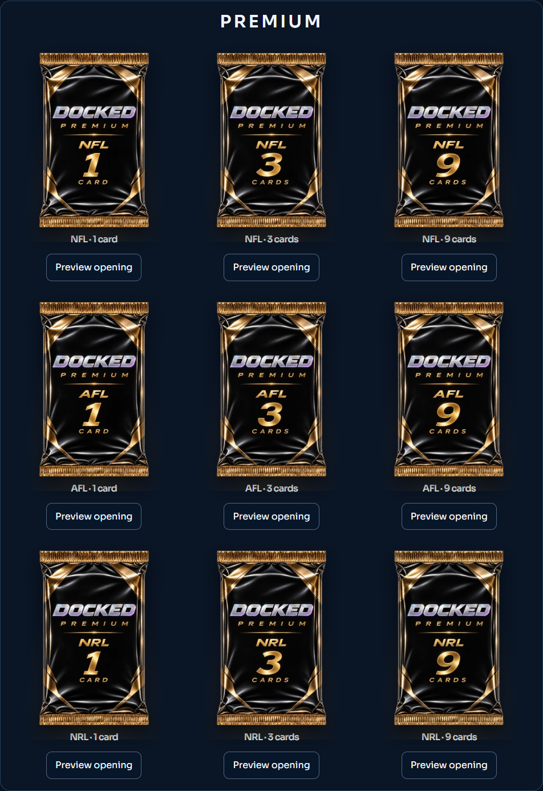

Ready for owner review · NOT DEPLOYED · NFL / AFL / NRL · NBA unchanged
All 21 existing variants: Starter silver (4 cards), Standard blue and Premium black/gold (1, 3, 9 cards). Every logo, tier, sport and quantity is baked into the finished artwork. Prices, odds, supply and eligibility still come from the existing catalogue.
Interactive gallery · Interactive store · Check results
The deployed artwork lookup contained only Standard AFL 9 and Premium NRL 9. Every other product fell back to the old flat renderer. Its mobile foil rule also allowed a 250px-wide image in a vertical product tile, making the single upgraded Premium pack much larger than its neighbours.
The shared renderer now selects the exact sport/tier/count artwork for all 21 existing variants. Mobile tiles use an image-and-details grid with 82–116px-wide packaging; desktop images are bounded to 180px. Catalogue data still supplies price, quantity and availability. My Packs, history, purchase confirmation, opening, Weekly Starter, prize packaging and owner previews reuse the same component.
All branding is baked into the finished transparent artwork. Three WebP sizes (240, 480 and 800px) reserve a 2:3 aspect ratio. The 240px assets are at most 30,592 bytes; all 63 production files total 6,119,656 bytes. The removed CSS mask no longer forces an extra 800px image download alongside a responsive thumbnail.
No schema, catalogue, billing, ownership, native Android or sport-visibility changes are included. Legacy fallback assets remain for unknown historical identities and hidden NBA; they are no longer used by the current NFL/AFL/NRL catalogue.
Same synthetic account and viewport; before reproduces the deployed 864df277 artwork selection and CSS.





SM-S921B, Android 17, Chrome. All 21 artwork variants, three purchase-review/cancel flows and synthetic 1-, 3- and 9-card openings passed. No runtime errors, non-GET requests or external requests were observed. This tested the real phone's Chrome with local sample data, not a Production account or the installed Docked WebView.
Device results · AFL store · NRL store · Enlarged opening · Nine-card summary
Desktop Edge, 412 × 915, DPR 2 and touch emulation; separately labelled from the physical-device check.
751 existing platform tests, 2 inventory checks and 62 browser checks passed. Typecheck, full lint and production webpack build passed. Includes 320–1440px layouts, 200% text, delayed image loading, all purchase confirmations, history, single/three/nine-card opening, double taps, Reveal All, resume, replay and lost-response recovery.
Production was read only. No database migration or change to payments, ownership, balances, odds or Google Play configuration. The seven pre-existing Google TEST reconciliation alerts remain separate and untouched.
The player-detail navigation fix remains a separate branch, as requested. This artwork candidate does not merge or deploy it.